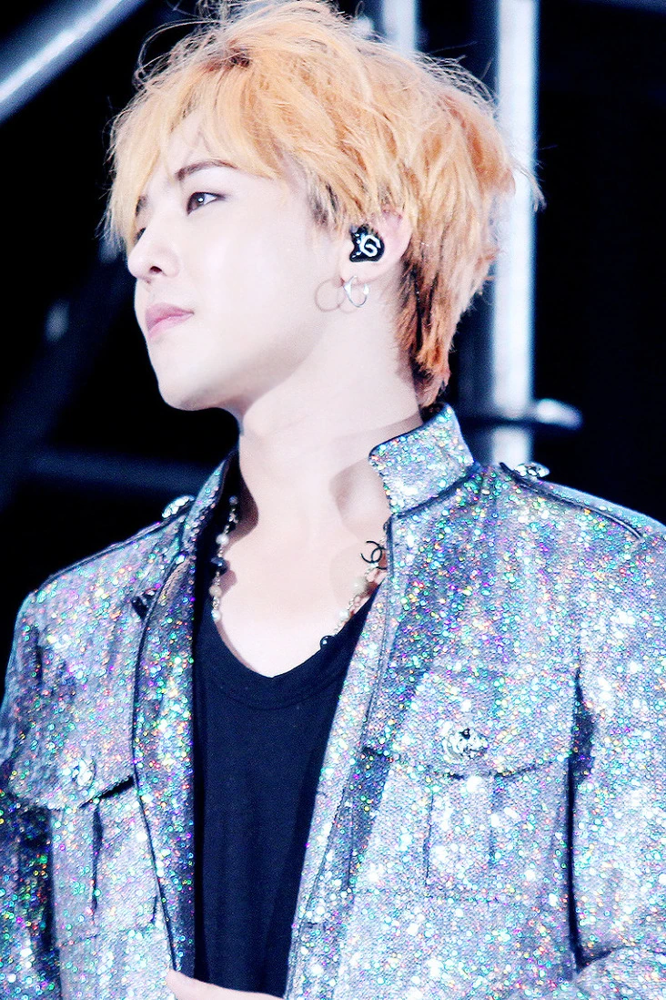

A MOMENT, IN COLOR · 2015
G-DRAGON
음악과 이미지, 태도와 변신. 한 사람의 이름이 하나의 장면이 되어온 시간.
아카이브 둘러보기→
01THE PERSONA
이름을 넘어,
하나의 언어로.
권지용과 G-DRAGON. 두 이름 사이에서 음악은 스타일이 되고, 스타일은 다시 자기표현의 방식이 된다.
이 페이지는 한 아티스트의 시간을 음반과 무대, 그리고 변화의 순간으로 엮은 작은 편집 아카이브입니다. 시작부터 현재까지, 각 장면이 다음 장면의 가능성을 열어온 흐름을 따라갑니다.
KWON JI YONGARTIST / SONGWRITER
02A LIFE IN CHAPTERS
시간의 궤적
한 해가 하나의 장면이 되고,
장면은 다음 시대의 문을 연다.
03SELECTED DISCOGRAPHY
작품의 인덱스
발매작을 따라가며
사운드의 변화를 듣습니다.
04THE VISUAL ARCHIVE
무대의 잔상
기록된 순간, 계속 움직이는 이미지.
01SYDNEY · 2017 — 무대의 스케일과 빛
02M.O.T.T.E WORLD TOUR · 2017
03SYDNEY · 2017
04M.O.T.T.E WORLD TOUR · 2017
사진은 원본 기록을 바탕으로 사용했으며, 출처와 라이선스 정보는 하단 크레딧에서 확인할 수 있습니다.
END OF THIS CHAPTERG-DRAGON / 01—04
계속해서,
다르게.
이 아카이브는 한 사람의 다음 장면을 기다립니다.
↑처음으로